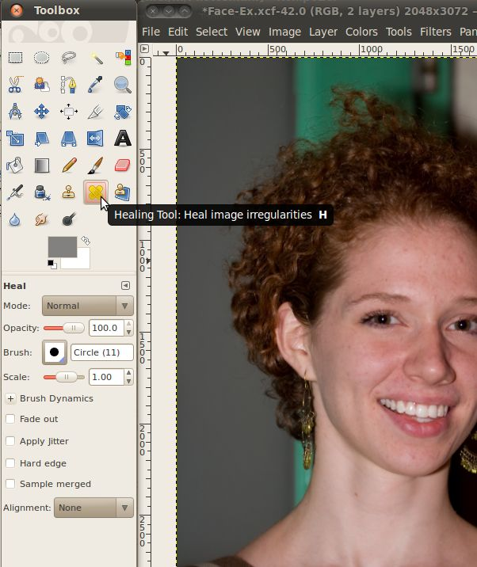
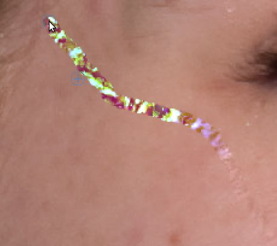
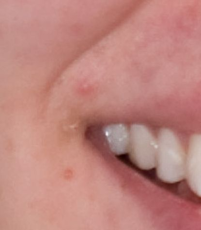
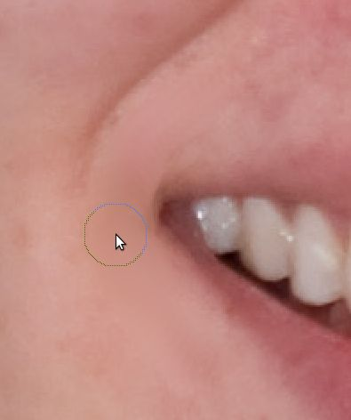
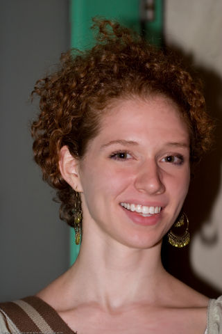
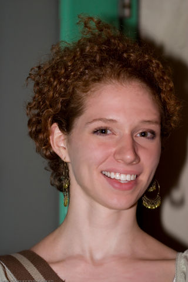

For our final section on photo editing using the GIMP we will look
at a couple tools that allow us to correct minor issues with the image
or even the person being photographed. Some of these are: areas
of shadow, pixel noise, blemishes, wrinkles, and more.

Now that we have that open let's create a new layer, identical to
the
background layer. This way, when we make changes in the new
layer, we can quickly go back to the original by just clicking the eye
in front of the new layer to hide it. To make the new layer, just
right click on the "Background" layer and select "Duplicate
Layer". This will create an identical copy of the original for
you to work with.
Now we will meet the first of our tools, the Heal tool.

The heal tool allows you to choose one spot (by holding down Ctrl while
you click that spot) then copy that spot to a new area (the size and
shape of the spot will vary depending on the brush you have
selected). When it puts that spot in the new area, it will
mathematically merge the new spot with what was already there.
This is great for getting rid of imperfections in a way the
incorporates the existing background, so it looks natural.
If you zoom in to the cheek below the subjects left eye, you will
see that there is an errant hair running across her face. Let's
do
a Ctrl+Click just below this hair to select a part of the cheek that is
a good match for what we want there.
Once we have the source selected, we just need to go up and click on
a spot on the hair. Once that spot is done, you can move to the
next spot and click again. You may need to make sure your brush
size is large enough to see it working. It should be at least 10
for this, I have found that circle 13 works well.

If you look at the above image, you can see the area above and left
of the cursor has had this applied to it, and the hair is gone!
Now we just need to keep doing this to the rest of the unsightly hair.
It is probably easier to click and drag across a good section of the
hair than to go through the whole thing clicking, but beware, as you
move the mouse your selection spot will move in the same direction that
the mouse moves as long as the button is held down. When you let
go, the selection spot will re-set to the original. If you picked
a spot close to the hair, for example just below where you first click
it, then you should be alright because the selection will just follow
the mouse and keep getting the area right below the hair, which is
fairly similar. However, if you had a selection near the top (to
the left of the eye) and started at the bottom and worked your way up,
your selection would soon end up in her hair, and then instead of
making the hair disappear it would make all sorts of new problems show
up in that spot.

The best thing to do is to drag the mouse in such a way that the
selection follows very close to the mouse, then you keep the same
general color and lighting conditions from that part of the face.
However, if this isn't feasible, it is possible to hold the selection
position fixed so it won't move. Simply select "Fixed" from the
alignment drop down box in the Heal tool properties dialog.
The next tool we will use to fix up this image is the smudge
tool. Let's select it from the toolbox.

The smudge tool will take the colors from one area and as you drag your
mouse move some of that color into the area you are dragging too.
It is very similar to if the picture were made of wet paint and your
ran your finger across it.
Here's a blunt example of smudge at work.


As you can see, the smudge took can really alter an area drastically. However, this is not what we will use it for. Instead, when you use the smudge tool, be sure not to accidentally run over areas of the picture that are borders between important areas. If you do slip and smudge somewhere you didn't mean to, you can always undo the last smudge by using the Ctrl+Z key combination.
Let's go down to the subjects chin and use the smudge tool to remove
a blemish there.


 
